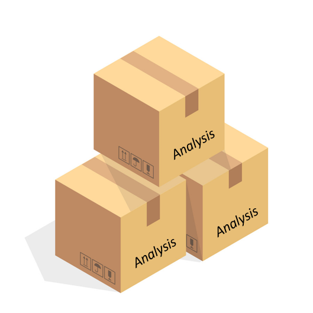

Chapter 8 Advanced: Documentation
For a quality assurer, making sense of a large piece of code without guidance is difficult, time consuming, and at worst leads to mistakes going undetected by the QA process. Documentation is therefore absolutely essential when writing code.
Documentation can be done at various, non-mutually exclusive levels:
- Comments
- Rmarkdown file
- Package
8.2 Rmarkdown file
Very often, documentation via in-script comments is sufficient for QA purposes. However providing a separate file dedicated to documentation can be useful for the more complex or riskier pieces of analyses. When coding in R, writing documentation as an Rmarkdown file can be a superior alternative to plain word documents or slide packs, particularly if many references to the source code are needed. The Rmarkdown format allows you to create html, pdf or word documents that include both R code and R outputs. An analyst could choose to have their entire analysis embedded in an Rmarkdown document and share both code and outputs with their quality assurer. Although this can make reproducibility checks easier, it is worth noting that using Rmarkown or Rnotebook documents can become unwieldy for computationally intensive analyses. Again Rstudio makes it very easy to create this type of document, as they are all available options in File > New File. Handy cheatsheets are also accessible from theTools dropdown menu.
8.3 Packaging your analysis

A more involved way of documenting a piece of code written in R is to bundle the functions it uses into an R package. Although Rstudio makes it relatively painless to package code, a certain level of experience is required to create good documentation for it (see here). For most analytical projects, packaging will not be needed to meet QA requirements. However, packaging should be considered if the code must be shared and used widely i.e. beyond quality assurers. Packages are major tools for reproducible coding in R, and allow for very extensive documentation, including help files for individual functions, detailed package dependency description and support for vignette creation.
8.4 A word on package version and dependency
R and RStudio are regularly updated and multiple versions of both are available on DfE’s software centre. Similarly, many R packages are maturing products that are actively being developed, with new iterations regularly being released. This means that code working in a certain way on one analyst’s machine might not necessarily do so on that or their quality assurers. These situations can be tricky to recognise and debug.
There are formal ways to keep track of package versions, the most popular being renv (details here). renv is a successor to the packrat package and makes package management easier and faster. It is a good idea to think about package dependencies and versions when dealing with projects destined to be shared widely, or with a long life-span. This is less of a concern when sharing code on a one-off analysis with a small number of quality assurers. A less formal way of documenting software and package versions would be for authors to include their sessionInfo() at the top of their master script.
8.1 Comments
As we covered earlier, comments are non-executable lines of code that describe what part of a programming script is intended to do. There is little to no overhead in adding comments to code and they often offer sufficient guidance from a quality assurance point of view. In both R and Python, text can be commented out in a script by usign the
#sign (a different syntax exists in Python for commenting out multiple lines at once). In SQL, single-line comments can be commented using two hyphens--, whilst multi-line comments start with /* and end with */ and in VBA code can be commented by prefixing with an apostrophe'. Whatever the language, long comments should be broken down over multiple lines to make them easier to read.